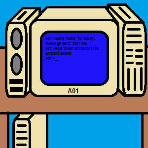

About Us
Light Technologies is an extension of Syria Computers and Wimplux Software Technologies. It was originaly intented to make and sell food, (The old company still exists, as foodboots) but in 1981, a factory outlet decided to make laptops for the consumers, and contacted Wimplux Software Technologies and Syria Computers. They together made a laptop called A01, and boy, it went viral!
When the main office saw what was happening, they too, decided that laptops are supposed to be as the merchandise for their company. But there were bumps in the road, as in, the software provided by Wimplux Software Technologies was too difficult to use, and although many users did buy the sets, some users either returned the sets back to the company, or they send it to other people.

A01 computer
A01 Screen
That was up until 1985 when the Windows Operating System came out and did prove a game changer; by using a more friendly GUI, it allowed Wimplux Software Technologies to inherit the basic rules of it and make it’s own software; Light Wimplux 2.3.9 (Which replaced Light Wiplux 1.5.8.0.0.2, the command-based UI).
Sooner than later, Light Technologies has developed many computers, each becoming better than the previous one; Wimplux Software Technologies developed more user-friendly GUI interfaces, which prooved to be a hit, and Syria Technologies improved some the hardware pieces for the computers, then Light Technologies fixed them together. It was not long when Light Technologies started producing its OWN parts, but Syria Technologies still manifactures ’special’ parts for the improving computers.
Now, Light Technologies makes a variety of electronic items, such as phones, tablets, TV sets, monitors, and of course, laptops... new models including Senxiya, Optimore, Quasi 3.8, D68, 39C, are all popping up as well as their Operating Systems:
| Laptop |
Senxiya |
Optimore |
Quasi 3.8 |
D68 |
39C |
| Operating System |
Senxiya 3.8.9.0.0.2 |
Optimore 12.8.9.0.3.2 |
Optimore 3.8.3.5.7.9 |
D68 2.4.7.7 |
D68 2.3.7.9 |